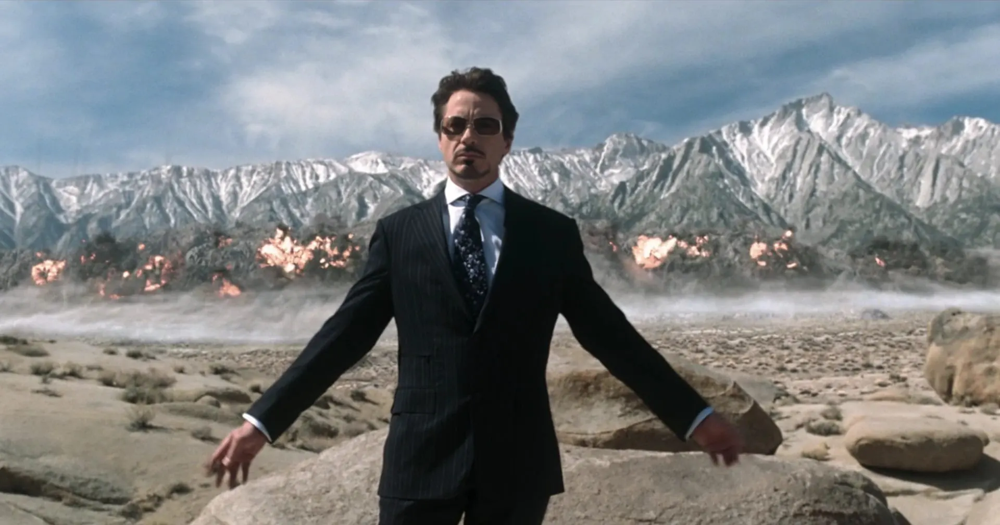
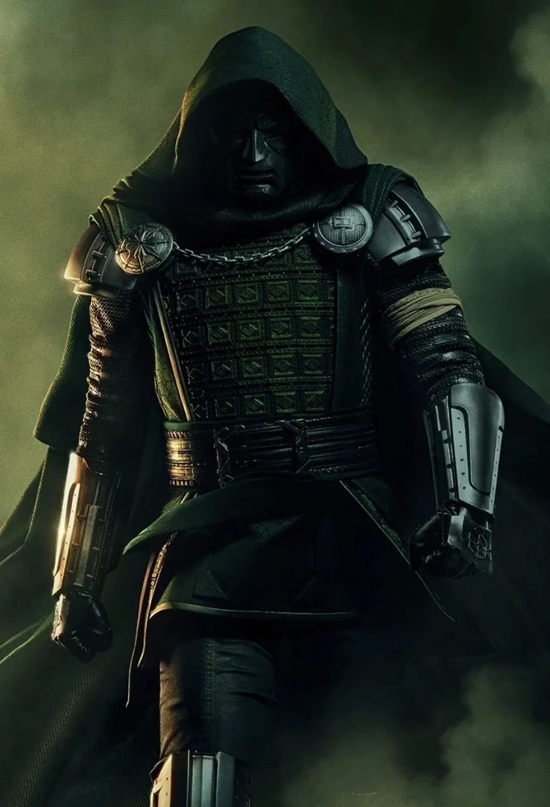

Tony Stark's
Journey
From a 1963 comic book to eleven films to a new mask: Tony Stark, told through his armor, his comics and the data around them.
Scroll to charge the reactor
Born in a 1963 comic, during the Vietnam War.
Stan Lee, Larry Lieber, Don Heck and Jack Kirby introduced Tony Stark in Tales of Suspense #39, cover-dated March 1963. He has been in Marvel comics every decade since.
It started with a box of scraps.
In 2008 the MCU retells the origin. A convoy ambush in Afghanistan leaves shrapnel in Tony's chest and a terrorist cell demanding a Jericho missile.
He builds something else. A miniature arc reactor keeps the shrapnel out of his heart and powers the Mark I, the first armor in our dataset and the baseline for every comparison that follows.
The suit dataset values the Mark I at $0 because it was built from scrap.
Every suit, wired into one reactor.
Each slice is one armor, ordered clockwise from Mark 1. Slice length shows its estimated value on a log scale, and the inner ring shows its development era. Hover or tab to a slice to pull that armor out of the reactor.
35 armors in eight months.
After the Battle of New York, Tony stops sleeping. Marks 8 through 42 were all built between May and December 2012. The timeline zooms into that window so the burst is readable.
The strip underneath adds a second dataset, worldwide box office for each film Tony appears in, on the same time axis.
Suits use in-universe build dates. Films use real-world release dates. Inside the shaded window, horizontal position is not a date: the dataset only says "May–Dec 2012".
Sixty years of sharing panels.
Across thousands of comic issues, some characters keep showing up beside Tony. Doctor Doom is one of them, long before Robert Downey Jr. wore the mask.
The last armor held the Infinity Stones.
The Mark 85 is the most expensive armor in the dataset, built with nanotech that reforms into whatever the fight needs. In Avengers: Endgame its gauntlet takes the Infinity Stones from Thanos.
The man who started by building weapons ends by spending his own life to stop one.

"I am Iron Man."
Robert Downey Jr. returns, as Victor von Doom.
At San Diego Comic-Con in July 2024, Marvel Studios announced Downey as Doctor Doom in Avengers: Doomsday. It is a new character for the actor, not a return of Tony Stark. Our story ends where his armor does.
Dec 18, 2026 release

Where every number comes from.
Views
- Arc reactor radial chartBUILT
- Zoomed suit timeline + box officeBUILT
- Mark 85 exploded scanBUILT
- Comics issues per yearSLOT
- Comic co-star networkSLOT
- Heatmap / Sankey / Armor DNAPLANNED
Datasets
- MCU Iron Man Suits (Kaggle)
- Marvel Database comic appearances (CC BY-SA)
- FiveThirtyEight comic characters (CC BY 4.0)
- Wikidata films, box office, media (CC0)
- IMDb ratings (non-commercial)
Caveats
- Suit values are fan estimates of fictional prices.
- 35 suits share one build interval (May–Dec 2012).
- Film stills © Marvel Studios, via the MCU Wiki, used for a non-commercial class project.